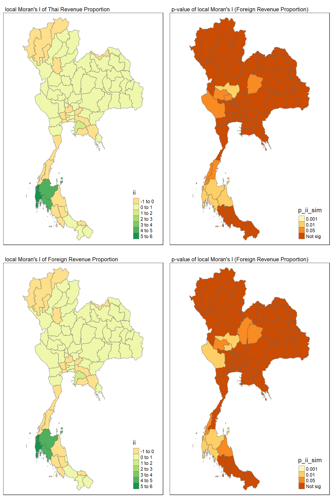
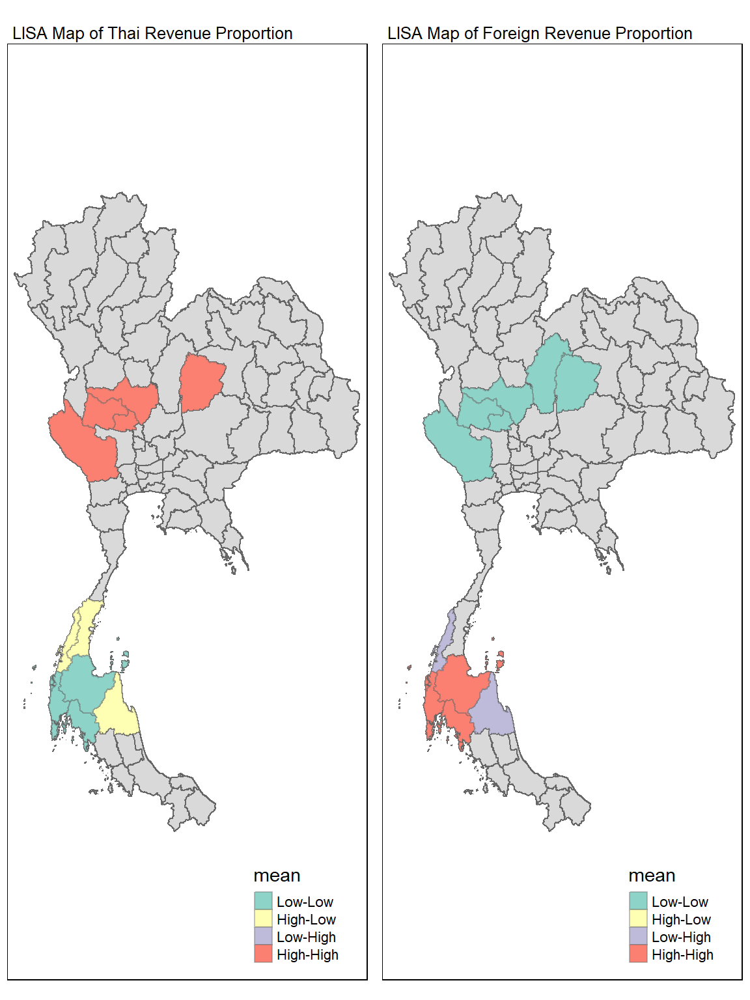
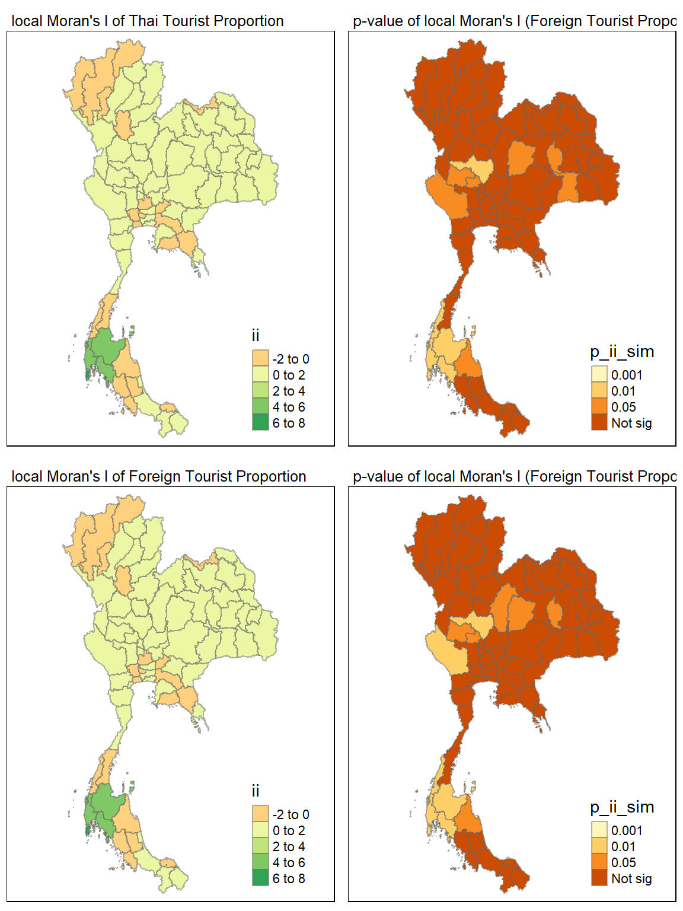
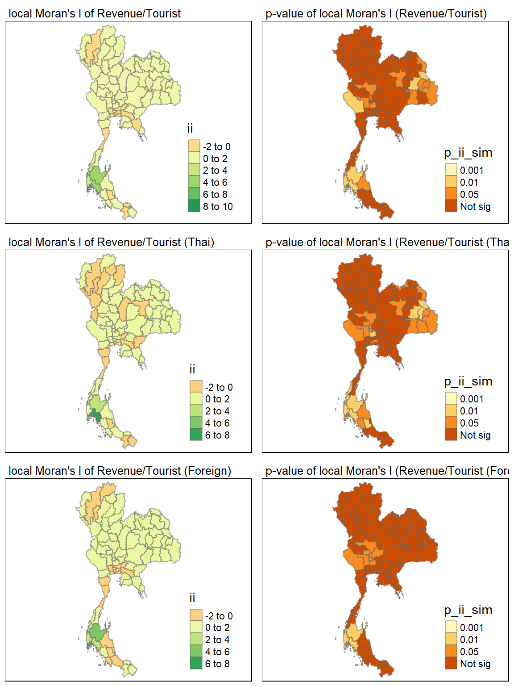
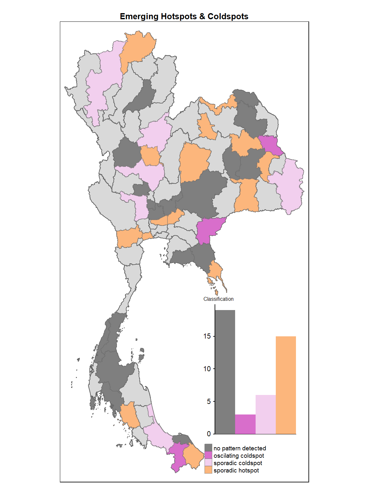
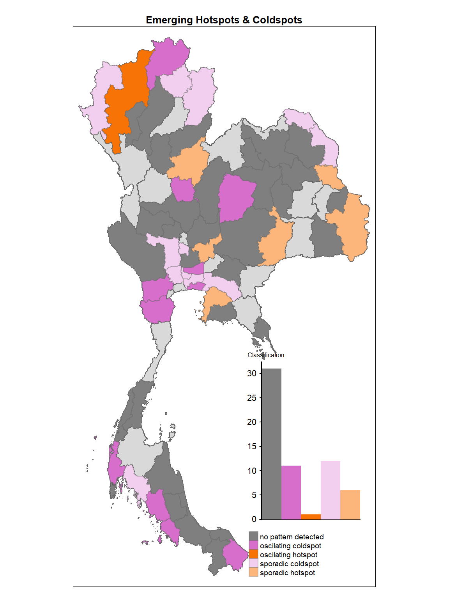

pacman::p_load(tidyverse, sfdep, sf, ggplot2, ggpubr, tmap, DT, crosstalk, plotly, Kendall)Take Home Exercise 02
Background
Tourism has been a key driver of Thailand’s gross domestic product (GDP), accounting for up to 20% of it. The COVID-19 pandemic caused the tourism revenue (from domestic and international tourism) to crash to US$24 billion in 2020, from US$90 billion in 2019.
Objectives
Using appropriate global and local spatial autocorrelation analysis and emerging hotspot analysis, I would like to find out:
- If the key indicators of tourism economy of Thailand are independent from space and space and time.
- If the tourism economy is indeed spatial and spatio-temporal dependent.
- If so, detect where the clusters and outliers are, and the emerging hotpot and cold spot areas.
Study Area
The study area will be Thailand (sf_polygon features) at province level.
Data Sources
(saved under ‘data’ folder)
Thailand Domestic Tourism Statistics 2019-2023 from Kaggle
Thailand - Subnational Administrative Boundaries from HDX…Click here to download here
1 Setting Up
1.1 Loading R Packages
I will be using the following R packages:
-sf package to perform geospatial wrangling tasks
- sfdep package to perform spatial autocorrelation analysis and emerging hotspot analysis
- tidyverse package for reading csv files, dataframe processing tasks
- ggplot2 and ggpubr package for plotting statistical graphics
- DT and crosstalk package for visualizing results in a table format
- plotly and Kendall package for performing and visualizing Mann-Kendall Test
- tmap package for plotting tasks
1.2 Loading Datasets
The aim here is to load the datasets and do the necessary geospatial data wrangling before proceeding to the subsequent steps.
1.2.1 Thailand Subnational Adminstrative Boundaries
st_read from the sf package is used to load the subnational boundaries.
# Load Thailand Province from HDX
th_bound_l1 <- st_read(dsn = "data/tha_adm_rtsd_itos_20210121_shp/", layer = "tha_admbnda_adm1_rtsd_20220121") %>%
st_transform(crs = 32647) Reading layer `tha_admbnda_adm1_rtsd_20220121' from data source
`C:\Users\Henry\Desktop\SMU Masters\2024-2025 T1\Geospatial Analytics & Applications\Project\GeospatialWebsite\Take-Home_Ex\Take-Home_Ex_02\data\tha_adm_rtsd_itos_20210121_shp'
using driver `ESRI Shapefile'
Simple feature collection with 77 features and 16 fields
Geometry type: MULTIPOLYGON
Dimension: XY
Bounding box: xmin: 97.34336 ymin: 5.613038 xmax: 105.637 ymax: 20.46507
Geodetic CRS: WGS 84# Check output
glimpse(th_bound_l1)Rows: 77
Columns: 17
$ Shape_Leng <dbl> 2.417227, 1.695100, 1.251111, 1.884945, 3.041716, 1.739908,…
$ Shape_Area <dbl> 0.13133873, 0.07926199, 0.05323766, 0.12698345, 0.21393797,…
$ ADM1_EN <chr> "Bangkok", "Samut Prakan", "Nonthaburi", "Pathum Thani", "P…
$ ADM1_TH <chr> "กรุงเทพมหานคร", "สมุทรปราการ", "นนทบุรี", "ปทุมธานี", "พระนครศรีอ…
$ ADM1_PCODE <chr> "TH10", "TH11", "TH12", "TH13", "TH14", "TH15", "TH16", "TH…
$ ADM1_REF <chr> NA, NA, NA, NA, NA, NA, NA, NA, NA, NA, NA, NA, NA, NA, NA,…
$ ADM1ALT1EN <chr> NA, NA, NA, NA, NA, NA, NA, NA, NA, NA, NA, NA, NA, NA, NA,…
$ ADM1ALT2EN <chr> NA, NA, NA, NA, NA, NA, NA, NA, NA, NA, NA, NA, NA, NA, NA,…
$ ADM1ALT1TH <chr> NA, NA, NA, NA, NA, NA, NA, NA, NA, NA, NA, NA, NA, NA, NA,…
$ ADM1ALT2TH <chr> NA, NA, NA, NA, NA, NA, NA, NA, NA, NA, NA, NA, NA, NA, NA,…
$ ADM0_EN <chr> "Thailand", "Thailand", "Thailand", "Thailand", "Thailand",…
$ ADM0_TH <chr> "ประเทศไทย", "ประเทศไทย", "ประเทศไทย", "ประเทศไทย", "ประเทศ…
$ ADM0_PCODE <chr> "TH", "TH", "TH", "TH", "TH", "TH", "TH", "TH", "TH", "TH",…
$ date <date> 2019-02-18, 2019-02-18, 2019-02-18, 2019-02-18, 2019-02-18…
$ validOn <date> 2022-01-22, 2022-01-22, 2022-01-22, 2022-01-22, 2022-01-22…
$ validTo <date> -001-11-30, -001-11-30, -001-11-30, -001-11-30, -001-11-30…
$ geometry <MULTIPOLYGON [m]> MULTIPOLYGON (((674339.8 15..., MULTIPOLYGON (…1.2.2 Thailand Tourism Data
read_csv from readr package within tidyverse is used to load the aspatial data as a tibble.
tbl_tourism <- read_csv('data/archive/thailand_domestic_tourism_2019_2023_ver2.csv')Rows: 30800 Columns: 7
── Column specification ────────────────────────────────────────────────────────
Delimiter: ","
chr (5): province_thai, province_eng, region_thai, region_eng, variable
dbl (1): value
date (1): date
ℹ Use `spec()` to retrieve the full column specification for this data.
ℹ Specify the column types or set `show_col_types = FALSE` to quiet this message.glimpse(tbl_tourism)Rows: 30,800
Columns: 7
$ date <date> 2019-01-01, 2019-01-01, 2019-01-01, 2019-01-01, 2019-01…
$ province_thai <chr> "กรุงเทพมหานคร", "ลพบุรี", "พระนครศรีอยุธยา", "สระบุรี", "ชัยนาท…
$ province_eng <chr> "Bangkok", "Lopburi", "Phra Nakhon Si Ayutthaya", "Sarab…
$ region_thai <chr> "ภาคกลาง", "ภาคกลาง", "ภาคกลาง", "ภาคกลาง", "ภาคกลาง", "…
$ region_eng <chr> "central", "central", "central", "central", "central", "…
$ variable <chr> "ratio_tourist_stay", "ratio_tourist_stay", "ratio_touri…
$ value <dbl> 93.37, 61.32, 73.37, 67.33, 79.31, 71.70, 64.65, 71.21, …Before joining the 2 datasets, we need to check if there are any non-matching values in either joining columns.
# Find values in Th bound that are not in Tourism Data
only_in_th_bound_l1 <- anti_join(th_bound_l1, tbl_tourism, by = c("ADM1_EN" = "province_eng")) %>% pull(ADM1_EN)
# Find values in Tourism Data that are not in Th Bound
only_in_tbl_tourism <- anti_join(tbl_tourism, th_bound_l1, by = c("province_eng" = "ADM1_EN")) %>% pull(province_eng)
# See all values
unmatched_values <- union(only_in_th_bound_l1, only_in_tbl_tourism)
print(unmatched_values) [1] "Lop Buri" "Chai Nat" "Chon Buri" "Prachin Buri"
[5] "Buri Ram" "Si Sa Ket" "Nong Bua Lam Phu" "Phangnga"
[9] "Lopburi" "Chainat" "Chonburi" "Prachinburi"
[13] "Phang Nga" "Buriram" "Sisaket" "Nong Bua Lamphu" Since we found the discrepancies, minor re-coding is required to ensure that values are aligned. The KPIs are also pivoted from long to wide to facilitate future analysis.
# Data processing
tbl_tourism_wide <- tbl_tourism %>%
mutate(province_eng = recode(province_eng,
"Lopburi" = "Lop Buri",
"Chainat" = "Chai Nat",
"Chonburi" = "Chon Buri",
"Prachinburi" = "Prachin Buri",
"Phang Nga" = "Phangnga",
"Buriram" = "Buri Ram",
"Sisaket" = "Si Sa Ket",
"Nong Bua Lamphu" = "Nong Bua Lam Phu"
),
province_eng = trimws(province_eng)
) %>%
pivot_wider(., names_from = "variable", values_from = "value")
# Check output
summary(tbl_tourism_wide) date province_thai province_eng region_thai
Min. :2019-01-01 Length:3850 Length:3850 Length:3850
1st Qu.:2020-01-01 Class :character Class :character Class :character
Median :2021-01-16 Mode :character Mode :character Mode :character
Mean :2021-01-15
3rd Qu.:2022-02-01
Max. :2023-02-01
region_eng ratio_tourist_stay no_tourist_stay no_tourist_all
Length:3850 Min. : 0.00 Min. : 0 Min. : 0
Class :character 1st Qu.:20.18 1st Qu.: 16271 1st Qu.: 39092
Mode :character Median :41.81 Median : 44579 Median : 92122
Mean :38.93 Mean : 105161 Mean : 206328
3rd Qu.:56.20 3rd Qu.: 90902 3rd Qu.: 203646
Max. :95.86 Max. :3335728 Max. :6131044
no_tourist_thai no_tourist_foreign revenue_all revenue_thai
Min. : 0 Min. : 0.0 Min. :0.000e+00 Min. :0.000e+00
1st Qu.: 37169 1st Qu.: 49.2 1st Qu.:6.332e+07 1st Qu.:5.925e+07
Median : 88782 Median : 553.0 Median :1.955e+08 Median :1.773e+08
Mean : 173962 Mean : 32366.1 Mean :1.344e+09 Mean :6.636e+08
3rd Qu.: 184256 3rd Qu.: 5189.5 3rd Qu.:5.060e+08 3rd Qu.:4.600e+08
Max. :4087756 Max. :2473725.0 Max. :1.103e+11 Max. :4.506e+10
revenue_foreign
Min. :-4.250e+03
1st Qu.: 1.100e+05
Median : 1.540e+06
Mean : 6.802e+08
3rd Qu.: 1.742e+07
Max. : 8.503e+10 There are some weird values in revenue_foreign (negative), more investigation is required. Furthermore, it was picked up for some rows no_tourist_stay is greater than no_tourist_all, which should not be possible.
tbl_tourism_wide %>%
filter(revenue_foreign < 0 | no_tourist_stay > no_tourist_all)# A tibble: 8 × 13
date province_thai province_eng region_thai region_eng
<date> <chr> <chr> <chr> <chr>
1 2020-03-01 ตราด Trat ภาคตะวันออก east
2 2020-05-01 เชียงใหม่ Chiang Mai ภาคเหนือ north
3 2020-06-01 ชลบุรี Chon Buri ภาคตะวันออก east
4 2021-07-01 นครปฐม Nakhon Pathom ภาคกลาง central
5 2020-08-01 ยะลา Yala ภาคใต้ south
6 2021-08-01 นครปฐม Nakhon Pathom ภาคกลาง central
7 2021-08-01 จันทบุรี Chanthaburi ภาคตะวันออก east
8 2020-12-01 สมุทรสาคร Samut Sakhon ภาคกลาง central
# ℹ 8 more variables: ratio_tourist_stay <dbl>, no_tourist_stay <dbl>,
# no_tourist_all <dbl>, no_tourist_thai <dbl>, no_tourist_foreign <dbl>,
# revenue_all <dbl>, revenue_thai <dbl>, revenue_foreign <dbl>Since this anomaly only pertains to a few rows of data, I’ll assume data entry error and re-code those revenue_foreign anomalies to 0 and cap the no_tourist_stay to no_tourist_all.
tbl_tourism_wide <- tbl_tourism_wide %>%
mutate(revenue_foreign = if_else(revenue_foreign < 0, 0, revenue_foreign),
no_tourist_stay = if_else(no_tourist_stay > no_tourist_all, no_tourist_all, no_tourist_stay))
# Check output
summary(tbl_tourism_wide) date province_thai province_eng region_thai
Min. :2019-01-01 Length:3850 Length:3850 Length:3850
1st Qu.:2020-01-01 Class :character Class :character Class :character
Median :2021-01-16 Mode :character Mode :character Mode :character
Mean :2021-01-15
3rd Qu.:2022-02-01
Max. :2023-02-01
region_eng ratio_tourist_stay no_tourist_stay no_tourist_all
Length:3850 Min. : 0.00 Min. : 0 Min. : 0
Class :character 1st Qu.:20.18 1st Qu.: 16259 1st Qu.: 39092
Mode :character Median :41.81 Median : 44579 Median : 92122
Mean :38.93 Mean : 105134 Mean : 206328
3rd Qu.:56.20 3rd Qu.: 90902 3rd Qu.: 203646
Max. :95.86 Max. :3335728 Max. :6131044
no_tourist_thai no_tourist_foreign revenue_all revenue_thai
Min. : 0 Min. : 0.0 Min. :0.000e+00 Min. :0.000e+00
1st Qu.: 37169 1st Qu.: 49.2 1st Qu.:6.332e+07 1st Qu.:5.925e+07
Median : 88782 Median : 553.0 Median :1.955e+08 Median :1.773e+08
Mean : 173962 Mean : 32366.1 Mean :1.344e+09 Mean :6.636e+08
3rd Qu.: 184256 3rd Qu.: 5189.5 3rd Qu.:5.060e+08 3rd Qu.:4.600e+08
Max. :4087756 Max. :2473725.0 Max. :1.103e+11 Max. :4.506e+10
revenue_foreign
Min. :0.000e+00
1st Qu.:1.100e+05
Median :1.540e+06
Mean :6.802e+08
3rd Qu.:1.742e+07
Max. :8.503e+10 To facilitate spatial autocorrelation across space and space and time, I need the tourism data in different formats. While doing so, additional KPIs will also be calculated. Rationale for those will be further explained while exploring the data.
# Summarize across all years
tbl_tourism_sum_all <- tbl_tourism_wide %>%
group_by(province_eng, province_thai, region_thai, region_eng) %>%
summarize(
ratio_tourist_stay = mean(ratio_tourist_stay, na.rm = TRUE),
no_tourist_stay = sum(no_tourist_stay, na.rm = TRUE),
no_tourist_all = sum(no_tourist_all, na.rm = TRUE),
no_tourist_thai = sum(no_tourist_thai, na.rm = TRUE),
no_tourist_foreign = sum(no_tourist_foreign, na.rm = TRUE),
revenue_all = sum(revenue_all, na.rm = TRUE),
revenue_thai = sum(revenue_thai, na.rm = TRUE),
revenue_foreign = sum(revenue_foreign, na.rm = TRUE)
) %>%
ungroup()`summarise()` has grouped output by 'province_eng', 'province_thai',
'region_thai'. You can override using the `.groups` argument.# Compute additional KPIs
tbl_tourism_sum_all <- tbl_tourism_sum_all %>%
mutate(tourist_thai_prop = ifelse(no_tourist_all == 0, 0, no_tourist_thai/no_tourist_all),
tourist_foreign_prop = ifelse(no_tourist_all == 0, 0, no_tourist_foreign/no_tourist_all),
revenue_thai_prop = ifelse(revenue_all == 0, 0, revenue_thai/revenue_all),
revenue_foreign_prop = ifelse(revenue_all == 0, 0, revenue_foreign/revenue_all),
revenue_tourist_all = ifelse(no_tourist_all == 0, 0, revenue_all/no_tourist_all),
revenue_tourist_thai = ifelse(no_tourist_thai == 0, 0, revenue_thai/no_tourist_thai),
revenue_tourist_foreign = ifelse(no_tourist_foreign == 0, 0, revenue_foreign/no_tourist_foreign),
revenue_tourist_stay = ifelse(no_tourist_stay == 0, 0, revenue_all/no_tourist_stay),
tourist_stay_all = ifelse(no_tourist_all == 0, 0, no_tourist_stay/no_tourist_all))
# Check output
summary(tbl_tourism_sum_all) province_eng province_thai region_thai region_eng
Length:77 Length:77 Length:77 Length:77
Class :character Class :character Class :character Class :character
Mode :character Mode :character Mode :character Mode :character
ratio_tourist_stay no_tourist_stay no_tourist_all no_tourist_thai
Min. :28.25 Min. : 259406 Min. : 772281 Min. : 750474
1st Qu.:35.02 1st Qu.: 1240268 1st Qu.: 3155560 1st Qu.: 2943753
Median :38.76 Median : 2520445 Median : 5474592 Median : 4583102
Mean :38.93 Mean : 5256719 Mean : 10316425 Mean : 8698118
3rd Qu.:42.78 3rd Qu.: 4580731 3rd Qu.: 10819668 3rd Qu.: 9615273
Max. :52.22 Max. :75436842 Max. :151352500 Max. :106899866
no_tourist_foreign revenue_all revenue_thai revenue_foreign
Min. : 3771 Min. :8.961e+08 Min. :8.918e+08 Min. :4.300e+06
1st Qu.: 37764 1st Qu.:5.416e+09 1st Qu.:4.860e+09 1st Qu.:7.466e+07
Median : 127404 Median :1.330e+10 Median :1.179e+10 Median :3.856e+08
Mean : 1618306 Mean :6.719e+10 Mean :3.318e+10 Mean :3.401e+10
3rd Qu.: 653537 3rd Qu.:2.306e+10 3rd Qu.:2.188e+10 3rd Qu.:2.242e+09
Max. :44452634 Max. :1.847e+12 Max. :7.407e+11 Max. :1.106e+12
tourist_thai_prop tourist_foreign_prop revenue_thai_prop revenue_foreign_prop
Min. :0.3543 Min. :0.002864 Min. :0.1194 Min. :0.003415
1st Qu.:0.9320 1st Qu.:0.011023 1st Qu.:0.8835 1st Qu.:0.013795
Median :0.9789 Median :0.021105 Median :0.9648 Median :0.035169
Mean :0.9158 Mean :0.084222 Mean :0.8766 Mean :0.123400
3rd Qu.:0.9890 3rd Qu.:0.068013 3rd Qu.:0.9862 3rd Qu.:0.116452
Max. :0.9971 Max. :0.645727 Max. :0.9966 Max. :0.880606
revenue_tourist_all revenue_tourist_thai revenue_tourist_foreign
Min. : 907.7 Min. : 906.8 Min. : 1068
1st Qu.: 1500.3 1st Qu.: 1499.0 1st Qu.: 2092
Median : 1990.7 Median : 1969.7 Median : 2876
Mean : 3454.3 Mean : 2805.1 Mean : 5212
3rd Qu.: 3325.0 3rd Qu.: 3085.8 3rd Qu.: 4743
Max. :30610.0 Max. :13343.8 Max. :41744
revenue_tourist_stay tourist_stay_all
Min. : 2394 Min. :0.0885
1st Qu.: 3843 1st Qu.:0.3102
Median : 4672 Median :0.4984
Mean : 6765 Mean :0.4983
3rd Qu.: 7129 3rd Qu.:0.6360
Max. :34955 Max. :0.9044 # Summarize across all years
tbl_tourism_sum_year <- tbl_tourism_wide %>%
mutate(year = year(date)) %>%
group_by(year, province_eng, province_thai, region_thai, region_eng) %>%
summarize(
ratio_tourist_stay = mean(ratio_tourist_stay, na.rm = TRUE),
no_tourist_stay = sum(no_tourist_stay, na.rm = TRUE),
no_tourist_all = sum(no_tourist_all, na.rm = TRUE),
no_tourist_thai = sum(no_tourist_thai, na.rm = TRUE),
no_tourist_foreign = sum(no_tourist_foreign, na.rm = TRUE),
revenue_all = sum(revenue_all, na.rm = TRUE),
revenue_thai = sum(revenue_thai, na.rm = TRUE),
revenue_foreign = sum(revenue_foreign, na.rm = TRUE)
) %>%
ungroup()`summarise()` has grouped output by 'year', 'province_eng', 'province_thai',
'region_thai'. You can override using the `.groups` argument.# Compute additional KPIs
tbl_tourism_sum_year <- tbl_tourism_sum_year %>%
mutate(tourist_thai_prop = ifelse(no_tourist_all == 0, 0, no_tourist_thai/no_tourist_all),
tourist_foreign_prop = ifelse(no_tourist_all == 0, 0, no_tourist_foreign/no_tourist_all),
revenue_thai_prop = ifelse(revenue_all == 0, 0, revenue_thai/revenue_all),
revenue_foreign_prop = ifelse(revenue_all == 0, 0, revenue_foreign/revenue_all),
revenue_tourist_all = ifelse(no_tourist_all == 0, 0, revenue_all/no_tourist_all),
revenue_tourist_thai = ifelse(no_tourist_thai == 0, 0, revenue_thai/no_tourist_thai),
revenue_tourist_foreign = ifelse(no_tourist_foreign == 0, 0, revenue_foreign/no_tourist_foreign),
revenue_tourist_stay = ifelse(no_tourist_stay == 0, 0, revenue_all/no_tourist_stay),
tourist_stay_all = ifelse(no_tourist_all == 0, 0, no_tourist_stay/no_tourist_all))
# Check output
summary(tbl_tourism_sum_year) year province_eng province_thai region_thai
Min. :2019 Length:385 Length:385 Length:385
1st Qu.:2020 Class :character Class :character Class :character
Median :2021 Mode :character Mode :character Mode :character
Mean :2021
3rd Qu.:2022
Max. :2023
region_eng ratio_tourist_stay no_tourist_stay no_tourist_all
Length:385 Min. : 5.452 Min. : 13523 Min. : 45008
Class :character 1st Qu.:25.977 1st Qu.: 176772 1st Qu.: 425219
Mode :character Median :42.385 Median : 400926 Median : 889499
Mean :42.228 Mean : 1051344 Mean : 2063285
3rd Qu.:57.638 3rd Qu.: 933078 3rd Qu.: 2072363
Max. :92.170 Max. :36407624 Max. :66966562
no_tourist_thai no_tourist_foreign revenue_all revenue_thai
Min. : 44180 Min. : 0 Min. :4.204e+07 Min. :4.165e+07
1st Qu.: 387805 1st Qu.: 2221 1st Qu.:7.809e+08 1st Qu.:7.160e+08
Median : 852972 Median : 11860 Median :1.873e+09 Median :1.746e+09
Mean : 1739624 Mean : 323661 Mean :1.344e+10 Mean :6.636e+09
3rd Qu.: 1799767 3rd Qu.: 79008 3rd Qu.:5.134e+09 3rd Qu.:4.647e+09
Max. :42073847 Max. :24892715 Max. :1.068e+12 Max. :3.846e+11
revenue_foreign tourist_thai_prop tourist_foreign_prop revenue_thai_prop
Min. :0.000e+00 Min. :0.2104 Min. :0.000000 Min. :0.05123
1st Qu.:4.880e+06 1st Qu.:0.9468 1st Qu.:0.004155 1st Qu.:0.92557
Median :3.119e+07 Median :0.9875 Median :0.012525 Median :0.98198
Mean :6.802e+09 Mean :0.9315 Mean :0.068537 Mean :0.90492
3rd Qu.:2.702e+08 3rd Qu.:0.9958 3rd Qu.:0.053158 3rd Qu.:0.99451
Max. :6.832e+11 Max. :1.0000 Max. :0.789559 Max. :1.00000
revenue_foreign_prop revenue_tourist_all revenue_tourist_thai
Min. :0.000000 Min. : 695.6 Min. : 695.2
1st Qu.:0.005495 1st Qu.: 1394.0 1st Qu.: 1382.6
Median :0.018025 Median : 1983.6 Median : 1937.6
Mean :0.095078 Mean : 3207.1 Mean : 2690.1
3rd Qu.:0.074430 3rd Qu.: 3185.7 3rd Qu.: 3113.0
Max. :0.948773 Max. :36131.4 Max. :15683.4
revenue_tourist_foreign revenue_tourist_stay tourist_stay_all
Min. : 0 Min. : 2030 Min. :0.05899
1st Qu.: 1931 1st Qu.: 3557 1st Qu.:0.33405
Median : 2657 Median : 4743 Median :0.48410
Mean : 4603 Mean : 6427 Mean :0.49282
3rd Qu.: 4373 3rd Qu.: 7059 3rd Qu.:0.61740
Max. :58147 Max. :44768 Max. :0.95484 # No additional processing required
# Compute additional KPIs
tbl_tourism_wide <- tbl_tourism_wide %>%
mutate(tourist_thai_prop = ifelse(no_tourist_all == 0, 0, no_tourist_thai/no_tourist_all),
tourist_foreign_prop = ifelse(no_tourist_all == 0, 0, no_tourist_foreign/no_tourist_all),
revenue_thai_prop = ifelse(revenue_all == 0, 0, revenue_thai/revenue_all),
revenue_foreign_prop = ifelse(revenue_all == 0, 0, revenue_foreign/revenue_all),
revenue_tourist_all = ifelse(no_tourist_all == 0, 0, revenue_all/no_tourist_all),
revenue_tourist_thai = ifelse(no_tourist_thai == 0, 0, revenue_thai/no_tourist_thai),
revenue_tourist_foreign = ifelse(no_tourist_foreign == 0, 0, revenue_foreign/no_tourist_foreign),
revenue_tourist_stay = ifelse(no_tourist_stay == 0, 0, revenue_all/no_tourist_stay),
tourist_stay_all = ifelse(no_tourist_all == 0, 0, no_tourist_stay/no_tourist_all))
# Check output
summary(tbl_tourism_wide) date province_thai province_eng region_thai
Min. :2019-01-01 Length:3850 Length:3850 Length:3850
1st Qu.:2020-01-01 Class :character Class :character Class :character
Median :2021-01-16 Mode :character Mode :character Mode :character
Mean :2021-01-15
3rd Qu.:2022-02-01
Max. :2023-02-01
region_eng ratio_tourist_stay no_tourist_stay no_tourist_all
Length:3850 Min. : 0.00 Min. : 0 Min. : 0
Class :character 1st Qu.:20.18 1st Qu.: 16259 1st Qu.: 39092
Mode :character Median :41.81 Median : 44579 Median : 92122
Mean :38.93 Mean : 105134 Mean : 206328
3rd Qu.:56.20 3rd Qu.: 90902 3rd Qu.: 203646
Max. :95.86 Max. :3335728 Max. :6131044
no_tourist_thai no_tourist_foreign revenue_all revenue_thai
Min. : 0 Min. : 0.0 Min. :0.000e+00 Min. :0.000e+00
1st Qu.: 37169 1st Qu.: 49.2 1st Qu.:6.332e+07 1st Qu.:5.925e+07
Median : 88782 Median : 553.0 Median :1.955e+08 Median :1.773e+08
Mean : 173962 Mean : 32366.1 Mean :1.344e+09 Mean :6.636e+08
3rd Qu.: 184256 3rd Qu.: 5189.5 3rd Qu.:5.060e+08 3rd Qu.:4.600e+08
Max. :4087756 Max. :2473725.0 Max. :1.103e+11 Max. :4.506e+10
revenue_foreign tourist_thai_prop tourist_foreign_prop revenue_thai_prop
Min. :0.000e+00 Min. :0.0000 Min. :0.0000000 Min. :0.0000
1st Qu.:1.100e+05 1st Qu.:0.9627 1st Qu.:0.0008535 1st Qu.:0.9511
Median :1.540e+06 Median :0.9932 Median :0.0066240 Median :0.9911
Mean :6.802e+08 Mean :0.9297 Mean :0.0637772 Mean :0.9090
3rd Qu.:1.742e+07 3rd Qu.:0.9990 3rd Qu.:0.0346323 3rd Qu.:0.9988
Max. :8.503e+10 Max. :1.0000 Max. :1.0000000 Max. :1.0016
revenue_foreign_prop revenue_tourist_all revenue_tourist_thai
Min. :0.000000 Min. : 0 Min. : 0
1st Qu.:0.001126 1st Qu.: 1366 1st Qu.: 1345
Median :0.008700 Median : 1932 Median : 1880
Mean :0.084802 Mean : 3513 Mean : 2614
3rd Qu.:0.045997 3rd Qu.: 3199 3rd Qu.: 3082
Max. :1.000000 Max. :300000 Max. :17325
revenue_tourist_foreign revenue_tourist_stay tourist_stay_all
Min. : 0 Min. : 0 Min. :0.0000
1st Qu.: 1294 1st Qu.: 3187 1st Qu.:0.3543
Median : 2372 Median : 4448 Median :0.5128
Mean : 4504 Mean : 6428 Mean :0.5270
3rd Qu.: 4137 3rd Qu.: 6754 3rd Qu.:0.6981
Max. :65000 Max. :300000 Max. :1.0000 # Save processed tbl_tourism_wide
write_rds(tbl_tourism_wide, 'data/processed/tbl_tourism_wide.rds')1.2.3 Merge Tourism data
Finally, I can merge the tourism dataset to the spatial dataset using left_join from dplyr. These are sorted to facilitate filtering later.
# Join with tourism data all
th_bound_tour_all <- left_join(th_bound_l1, tbl_tourism_sum_all, by = c("ADM1_EN" = "province_eng")) %>%
arrange(ADM1_EN)
# Join with tourism data by year
th_bound_tour_year <- left_join(th_bound_l1, tbl_tourism_sum_year, by = c("ADM1_EN" = "province_eng")) %>%
arrange(year, ADM1_EN)
# Join with tourism data by year and month
th_bound_tour_year_month <- left_join(th_bound_l1, tbl_tourism_wide, by = c("ADM1_EN" = "province_eng")) %>%
arrange(date.y, ADM1_EN)A good practise is to save these processed datasets for easy retrieval.
# Export to processed sub-folder as RDS
write_rds(th_bound_tour_all, 'data/processed/th_bound_tour_all.rds')
write_rds(th_bound_tour_year, 'data/processed/th_bound_tour_year.rds')
write_rds(th_bound_tour_year_month, 'data/processed/th_bound_tour_year_month.rds')After clearing the r environment, I’ll load in the various datasets.
# Clear R console
rm(list = ls(all.names = TRUE))
# Load various processed dataset
th_bound_tour_all <- read_rds('data/processed/th_bound_tour_all.rds')
th_bound_tour_year <- read_rds('data/processed/th_bound_tour_year.rds')
th_bound_tour_year_month <- read_rds('data/processed/th_bound_tour_year_month.rds')2 Exploratory Data Analysis
In this section, I will explore the various tourism indicators provided by the dataset.
| Variable | Definition |
|---|---|
| revenue_all | Revenue generated by all tourists in the province (Thai Baht) |
| revenue_thai | Revenue generated by Thai tourists in the province (Thai Baht) |
| revenue_foreign | Revenue generated by Foreign tourists in the province (Thai Baht) |
| no_tourist_all | Total number of tourists who visited the province |
| no_tourist_thai | Number of Thai tourists who visited the province |
| no_tourist_foreign | Number of Foreign tourists who visited the province |
| ratio_tourist_stay | Occupancy rate - Percentage of occupied travel accomodation |
| no_tourist_stay | Number of Tourists who stayed overnight in the province |
Lets first check the revenue indicators.
# Visualize for revenue
revenue_all <- ggplot(data=th_bound_tour_all,
aes(x=`revenue_all`)) +
geom_histogram(bins=20,
color="black",
fill="light blue") +
labs(x = "Revenue from all tourists")
revenue_thai <- ggplot(data=th_bound_tour_all,
aes(x=`revenue_thai`)) +
geom_histogram(bins=20,
color="black",
fill="light blue") +
labs(x = "Revenue from Thai tourists")
revenue_foreign <- ggplot(data=th_bound_tour_all,
aes(x=`revenue_foreign`)) +
geom_histogram(bins=20,
color="black",
fill="light blue") +
labs(x = "Revenue from Foreign tourists")
ggarrange(revenue_all, revenue_thai, revenue_foreign, ncol = 3)
As expected, there is a large left skew, with majority of provinces generating much lesser revenue as compared to the outliers. Lets look at the tourist count then.
# Visualize for tourist
map1 <- ggplot(data=th_bound_tour_all,
aes(x=`no_tourist_all`)) +
geom_histogram(bins=20,
color="black",
fill="light blue") +
labs(x = "Total Number of tourists")
map2 <- ggplot(data=th_bound_tour_all,
aes(x=`no_tourist_thai`)) +
geom_histogram(bins=20,
color="black",
fill="light blue") +
labs(x = "Number of Thai tourists")
map3 <- ggplot(data=th_bound_tour_all,
aes(x=`no_tourist_foreign`)) +
geom_histogram(bins=20,
color="black",
fill="light blue") +
labs(x = "Number of Foreign tourists")
ggarrange(map1, map2, map3, ncol = 3)
Again, we see the same distribution for tourist count as compared to revenue. This is can be clearly illustrated when we plot both revenue and tourists as choropleth maps.
map1 <- tm_shape(th_bound_tour_all) +
tm_fill(col = "no_tourist_all",
n = 5,
style = "jenks",
title = "Total Tourist") +
tm_borders(alpha = 0.5)
map2 <- tm_shape(th_bound_tour_all) +
tm_fill(col = "revenue_all",
n = 5,
style = "jenks",
title = "Total Revenue") +
tm_borders(alpha = 0.5)
tmap_arrange(map1, map2,
asp=NA, ncol=2)
It is clear that provinces with larger volume of tourists will generate larger revenue. However, that is not necessarily a good indicator of the tourism economy. Other than just trying to increase revenue by increasing the tourist traffic, the Thai government will also be keen into other indicators.
2.1 Feature Engineering
Other variables are created in order to provide greater depth to analysing the Thai tourism economy.
| Variable | Definition |
|---|---|
| tourist_thai_prop | Proportion of tourists who are Thai |
| tourist_foreign_prop | Proportion of tourists who are Foreign |
| revenue_thai_prop | Proportion of revenue generated by Thai tourists |
| revenue_foreign_prop | Proportion of revenue generated by Foreign tourists |
| revenue_tourist_all | Revenue generated per tourist |
| revenue_tourist_thai | Revenue generated per Thai tourist |
| revenue_tourist_foreign | Revenue generated per Foreign tourist |
| revenue_tourist_stay | Revenue generated per tourist who stay overnight |
| tourist_stay_all | Proportion of tourists who stayed overnight |
Here’s a quick check for 1 of the
# Visualize revenue per tourist
tm_shape(th_bound_tour_all) +
tm_fill(col = "revenue_tourist_all",
n = 5,
style = "jenks",
title = "Revenue per Tourist") +
tm_borders(alpha = 0.5) This clearly shows a different distribution compared to the basic revenue/tourist count distribution. This indicator is also important the Thai government can try to increase total tourism revenue by increasing per Thai Baht spent by each tourist.
2.2 Power BI Visualization
Press play to see how the values change across time!
Althought Bangkok accounts for the overwhelming proportion of revenue and tourist count, other provinces can also be viewed to be important to Thailand’s tourism economy. Some provinces are largely skewed towards foreign tourists (i.e Bangkok Metropolitan Region, provinces surrounding Phuket such as Phang Nga and Surat Thani)
In terms of spending per tourist, less prominent provinces (i.e Songkhla) may place within the top provinces, showing the potential for larger provinces to improve their tourist offerings.
Finally, by comparing the tourist proportion (foreign vs Thai) against proportion of tourists who stay over, it can be interesting to note the different tourism dynamics for each province.
- Phuket - revenue largely driven by foreign tourists (88%), high proportion of tourists who stay over (65%)
- Phang Nga - province near Phuket (revenue also driven by foreign tourists 80%) but low proportion of tourists who stay over (29%), suggesting it is a stopover visit as foreign tourists center their travel plans around Phuket instead
- Bangkok - revenue somewhat driven by Foreign tourists (60%), with only 50% of tourists who stay over, suggesting it is a place where people travel to as a quick getaway (usually a daytrip)
- Ma Hong Son - revenue largely driven by Thai tourists (78%), high proportion of tourists who stay over (90%), suggesting that it is a place where locals go to for an extended holiday given its location (at the edges of Thailand).
3 Global Spatial Autocorrelation Analysis of Thailand Tourism Key Indicators
In order to determine whether tourism indicators are independent of space, and space and time, I would need to do the following:
- Compute Spatial Weights
- Get list of neighbours
- Calculate weights
- Perform Global Moran’s I on key indicators
Geary’s C will not be conducted as it heavily overlaps with Moran’s I (in terms of the objective).
3.1 Spatial Weights Matrix
There are a few options to get the list of neighbours in sfdep package:
| Method | Details |
|---|---|
st_contiguity (i.e. Queen) |
Based on regions with contiguous boundaries (uses spdep::poly2nb) |
st_dist_band (fixed distance) |
Based on distance band (uses spdep::dnearneigh) |
st_knn (adaptive distance) |
Based on k nearest neighbours (uses spdep::knearneigh and spdep::knn2nb) |
Before passing the coordinates to either functions, checks are required to ensure that the points are in the interior of each province (i.e. not in the middle of the ocean).
# Generate coordinates using st_centroid
longitude_cent <- map_dbl(th_bound_tour_all$geometry, ~st_centroid(.x)[[1]])
latitude_cent <- map_dbl(th_bound_tour_all$geometry, ~st_centroid(.x)[[2]])
coords_cent <- cbind(longitude_cent, latitude_cent)
# Generate coordinates using st_point_on_surface
longitude <- map_dbl(th_bound_tour_all$geometry, ~st_point_on_surface(.x)[[1]])
latitude <- map_dbl(th_bound_tour_all$geometry, ~st_point_on_surface(.x)[[2]])
coords <- cbind(longitude, latitude)# Visualise both points on a map to verify
plot(th_bound_tour_all$geometry, border="lightgrey", main = "Points Comparison")
points(coords_cent, pch = 19, cex = 0.2, col = "red")
points(coords, pch = 19, cex = 0.2, col = "blue")
legend("topright", legend = c("st_centroid", "st_point_on_surface-"),
col = c("red", "blue"), pch = 19, cex = 0.8)
After closely viewing the plot, all points from st_centroid are within the interior of the province polygons. With the exception of a few provinces, the points from st_centroid are seemingly better placed towards the center as compared to st_point_on_surface. Therefore, this allows the sfdep distance based neighbour functions to be used with ease considering st_centroid is used as the default.
# Calculate neighbours
nb_contiguity <- st_contiguity(th_bound_tour_all$geometry)Results are saved for ease of rendering
# # Export output object and read it in to minimize rendering time
# write_rds(nb_contiguity, 'data/output/nb_contiguity.rds') # Uncomment when running again
# Read in output object
nb_contiguity <- read_rds('data/output/nb_contiguity.rds')
# Check output
nb_contiguityNeighbour list object:
Number of regions: 77
Number of nonzero links: 352
Percentage nonzero weights: 5.93692
Average number of links: 4.571429
1 region with no links:
48
2 disjoint connected subgraphs# Visualize neighbours
plot(th_bound_tour_all$geometry, border="lightgrey", , main="Queen Contiguity ")
plot(nb_contiguity, coords_cent, pch = 19, cex = 0.6, add = TRUE, col = "red")# Calculate neighbours
nb_dist <- st_dist_band(th_bound_tour_all$geometry)Results are saved for ease of rendering
# # Export output object and read it in to minimize rendering time
# write_rds(nb_dist, 'data/output/nb_dist.rds') # Uncomment when running again
# Read in output object
nb_dist <- read_rds('data/output/nb_dist.rds')
# Check output
nb_distNeighbour list object:
Number of regions: 77
Number of nonzero links: 474
Percentage nonzero weights: 7.994603
Average number of links: 6.155844
2 disjoint connected subgraphs# Visualize neighbours
plot(th_bound_tour_all$geometry, border="lightgrey", main="Distance Band")
plot(nb_dist, coords_cent, pch = 19, cex = 0.6, add = TRUE, col = "red")General rule of thumb for k is square root of observations. \[
k \approx \sqrt{76} \approx 8
\] Just for variety, k = 5 (average number from st_contiguity) is also run.
# Calculate neighbours
nb_knn_8 <- st_knn(th_bound_tour_all$geometry, k = 8)! Polygon provided. Using point on surface.nb_knn_5 <- st_knn(th_bound_tour_all$geometry, k = 5)! Polygon provided. Using point on surface.Results are saved for ease of rendering
# # # Export output object and read it in to minimize rendering time
# write_rds(nb_knn_8, 'data/output/nb_knn_8.rds') # Uncomment when running again
# write_rds(nb_knn_5, 'data/output/nb_knn_5.rds') # Uncomment when running again
# Read in output object
nb_knn_8 <- read_rds('data/output/nb_knn_8.rds')
nb_knn_5 <- read_rds('data/output/nb_knn_5.rds')
# Check output
nb_knn_8Neighbour list object:
Number of regions: 77
Number of nonzero links: 616
Percentage nonzero weights: 10.38961
Average number of links: 8
Non-symmetric neighbours listnb_knn_5Neighbour list object:
Number of regions: 77
Number of nonzero links: 385
Percentage nonzero weights: 6.493506
Average number of links: 5
Non-symmetric neighbours list# Visualize neighbours
par(mfrow=c(1,2))
plot(th_bound_tour_all$geometry, border="lightgrey", main="K = 8")
plot(nb_knn_8, coords_cent, pch = 19, cex = 0.6, add = TRUE, col = "red")
plot(th_bound_tour_all$geometry, border="lightgrey", main="K = 5")
plot(nb_knn_5, coords_cent, pch = 19, cex = 0.6, add = TRUE, col = "red")Comparing the various neighbour methods, I have decided on the adaptive method of determining neighbours, specifically k = 5. Reason are as follows:
st_contiguity- Not appropriate for this case since not all boundaries are contiguous, (i.e. there is an island - Phuket).st_dist_band- Having a fixed distance causes urban provinces to have much more neighbours (i.e. Bangkok Metropolitan Region) while rural provinces have scarce neighbours. I feel that this is not an appropriate relationship for analyzing tourism indicators.st_knn(k = 8) - Judging from the plot, the neighbour list seemed to be much to congested. k = 5 provides a more reasonable structure.
Although I have determined the neighbour list, there are also a few options to generate the weights:
| Method | Details |
|---|---|
st_weights |
Standardized weights based on neighbour list |
st_kernel_weights |
Weights based on kernel functions and distance |
st_inverse_distance |
Weights based on inverse distance between points |
Given the context of tourism, I have decided to focus on st_weights. The rationale is as follows:
st_weights- ensure that all neighbours have equal influencest_inverse_distance- while it can be argued that distance is likely a factor especially for specific tourism indicators (i.e. local preferring areas that are closer for a quick getaway, affecting indicators involving overnight stays), it is not clear the extent to which it impacts the overall tourism industry.
While performing st_weights, the style is less significant due to the adaptive nature of KNN. W is selected as the default style. Rationale for not choosing the other styles are as follows:
- B (binary weights) - Does not really matter since neighbours are already treated uniformly
- C (globally standardized weights) - Will dilute local effects making it not suitable for tourism analysis
- U (equal weights) - Similar to C, less focused on local effects required for tourism analysis
- S (variance-stabilizing) - More relevant for analysis where variance stability is important
- minmax - Similar to C and U with added layer of normalization
th_tour_knn5_all <- th_bound_tour_all %>%
mutate(nb = nb_knn_5,
wt = st_weights(nb, style = "W"),
.before = 1)3.2 Global Moran’s I across Space
In performing Global Moran’s I, global_moran_perm will be used over global_moran and global_moran_test as:
global_morandoes not give any p-valueglobal_moran_testis not as robust asglobal_moran_permwhich is a Monte-Carlo simulation.
The null and alternative hypothesis for Global Moran’s I are:
H0: The attribute is randomly distributed among the provinces, no spatial autocorrelation
H1: The attribute is not randomly distributed among the provinces, spatial autocorrelation
set.seed(42)
global_moran_perm(th_tour_knn5_all$revenue_all,
th_tour_knn5_all$nb,
th_tour_knn5_all$wt,
nsim = 999)
Monte-Carlo simulation of Moran I
data: x
weights: listw
number of simulations + 1: 1000
statistic = 0.021003, observed rank = 848, p-value = 0.304
alternative hypothesis: two.sidedset.seed(42)
global_moran_perm(th_tour_knn5_all$revenue_thai,
th_tour_knn5_all$nb,
th_tour_knn5_all$wt,
nsim = 999)
Monte-Carlo simulation of Moran I
data: x
weights: listw
number of simulations + 1: 1000
statistic = -0.0019269, observed rank = 694, p-value = 0.612
alternative hypothesis: two.sidedset.seed(42)
global_moran_perm(th_tour_knn5_all$revenue_foreign,
th_tour_knn5_all$nb,
th_tour_knn5_all$wt,
nsim = 999)
Monte-Carlo simulation of Moran I
data: x
weights: listw
number of simulations + 1: 1000
statistic = 0.035698, observed rank = 897, p-value = 0.206
alternative hypothesis: two.sidedset.seed(42)
global_moran_perm(th_tour_knn5_all$revenue_thai_prop,
th_tour_knn5_all$nb,
th_tour_knn5_all$wt,
nsim = 999)
Monte-Carlo simulation of Moran I
data: x
weights: listw
number of simulations + 1: 1000
statistic = 0.36446, observed rank = 1000, p-value < 2.2e-16
alternative hypothesis: two.sidedset.seed(42)
global_moran_perm(th_tour_knn5_all$revenue_foreign_prop,
th_tour_knn5_all$nb,
th_tour_knn5_all$wt,
nsim = 999)
Monte-Carlo simulation of Moran I
data: x
weights: listw
number of simulations + 1: 1000
statistic = 0.36446, observed rank = 1000, p-value < 2.2e-16
alternative hypothesis: two.sidedset.seed(42)
global_moran_perm(th_tour_knn5_all$no_tourist_all,
th_tour_knn5_all$nb,
th_tour_knn5_all$wt,
nsim = 999)
Monte-Carlo simulation of Moran I
data: x
weights: listw
number of simulations + 1: 1000
statistic = 0.025892, observed rank = 848, p-value = 0.304
alternative hypothesis: two.sidedset.seed(42)
global_moran_perm(th_tour_knn5_all$no_tourist_thai,
th_tour_knn5_all$nb,
th_tour_knn5_all$wt,
nsim = 999)
Monte-Carlo simulation of Moran I
data: x
weights: listw
number of simulations + 1: 1000
statistic = 0.029083, observed rank = 829, p-value = 0.342
alternative hypothesis: two.sidedset.seed(42)
global_moran_perm(th_tour_knn5_all$no_tourist_foreign,
th_tour_knn5_all$nb,
th_tour_knn5_all$wt,
nsim = 999)
Monte-Carlo simulation of Moran I
data: x
weights: listw
number of simulations + 1: 1000
statistic = 0.059863, observed rank = 926, p-value = 0.148
alternative hypothesis: two.sidedset.seed(42)
global_moran_perm(th_tour_knn5_all$tourist_thai_prop,
th_tour_knn5_all$nb,
th_tour_knn5_all$wt,
nsim = 999)
Monte-Carlo simulation of Moran I
data: x
weights: listw
number of simulations + 1: 1000
statistic = 0.39259, observed rank = 1000, p-value < 2.2e-16
alternative hypothesis: two.sidedset.seed(42)
global_moran_perm(th_tour_knn5_all$tourist_foreign_prop,
th_tour_knn5_all$nb,
th_tour_knn5_all$wt,
nsim = 999)
Monte-Carlo simulation of Moran I
data: x
weights: listw
number of simulations + 1: 1000
statistic = 0.39259, observed rank = 1000, p-value < 2.2e-16
alternative hypothesis: two.sidedset.seed(42)
global_moran_perm(th_tour_knn5_all$revenue_tourist_all,
th_tour_knn5_all$nb,
th_tour_knn5_all$wt,
nsim = 999)
Monte-Carlo simulation of Moran I
data: x
weights: listw
number of simulations + 1: 1000
statistic = 0.35986, observed rank = 1000, p-value < 2.2e-16
alternative hypothesis: two.sidedset.seed(42)
global_moran_perm(th_tour_knn5_all$revenue_tourist_thai,
th_tour_knn5_all$nb,
th_tour_knn5_all$wt,
nsim = 999)
Monte-Carlo simulation of Moran I
data: x
weights: listw
number of simulations + 1: 1000
statistic = 0.38688, observed rank = 1000, p-value < 2.2e-16
alternative hypothesis: two.sidedset.seed(42)
global_moran_perm(th_tour_knn5_all$revenue_tourist_foreign,
th_tour_knn5_all$nb,
th_tour_knn5_all$wt,
nsim = 999)
Monte-Carlo simulation of Moran I
data: x
weights: listw
number of simulations + 1: 1000
statistic = 0.2972, observed rank = 1000, p-value < 2.2e-16
alternative hypothesis: two.sidedset.seed(42)
global_moran_perm(th_tour_knn5_all$ratio_tourist_stay,
th_tour_knn5_all$nb,
th_tour_knn5_all$wt,
nsim = 999)
Monte-Carlo simulation of Moran I
data: x
weights: listw
number of simulations + 1: 1000
statistic = 0.087707, observed rank = 931, p-value = 0.138
alternative hypothesis: two.sidedset.seed(42)
global_moran_perm(th_tour_knn5_all$no_tourist_stay,
th_tour_knn5_all$nb,
th_tour_knn5_all$wt,
nsim = 999)
Monte-Carlo simulation of Moran I
data: x
weights: listw
number of simulations + 1: 1000
statistic = 0.027289, observed rank = 828, p-value = 0.344
alternative hypothesis: two.sidedset.seed(42)
global_moran_perm(th_tour_knn5_all$tourist_stay_all,
th_tour_knn5_all$nb,
th_tour_knn5_all$wt,
nsim = 999)
Monte-Carlo simulation of Moran I
data: x
weights: listw
number of simulations + 1: 1000
statistic = 0.35405, observed rank = 1000, p-value < 2.2e-16
alternative hypothesis: two.sidedset.seed(42)
global_moran_perm(th_tour_knn5_all$revenue_tourist_stay,
th_tour_knn5_all$nb,
th_tour_knn5_all$wt,
nsim = 999)
Monte-Carlo simulation of Moran I
data: x
weights: listw
number of simulations + 1: 1000
statistic = 0.35298, observed rank = 1000, p-value < 2.2e-16
alternative hypothesis: two.sidedThe p-value of Moran’s I test for basic attributes are >0.05, therefore I am not able to reject the null hypothesis for those attributes.
However, for the engineered features, the p-value is <0.05, allowing me to reject the null hypothesis and conclude that there is sufficient evidence for the alternative hypothesis that there is spatial autocorrelation.
Therefore, with those indicators in mind I can conclude that Thailand’s tourism economy is spatial dependent.
3.3 Global Moran’s I across Space and Time
To determine whether the tourism indicators are independent of space and time, I will do the following:
- Set seed
- Filter the respective datasets by specific time (Year/Year and month)
- Append the neighbour list created in 3.1
- Calculate the spatial weight matrix
- Perform Global Moran’s I for all KPIs
- Consolidate the results of the Global Moran’s I
Since this is very repetitive, I’ll use a function to run this iteratively.
# Function to run global_moran_perm iteratively
run_global_moran <- function(data, date_col, value, kpi_list) {
# Set seed
set.seed(42)
# Filter sf dataframe
filtered_data <- data %>%
filter(!!sym(date_col) == value)
# Append neighbour list and calculate spatial weight matrix
filtered_data <- filtered_data %>%
mutate(nb = nb_knn_5,
wt = st_weights(nb, style = "W"),
.before = 1)
# Run global_moran_perm for each KPI in kpi_weight list
results <- lapply(kpi_list, function(kpi) {
moran_output <- global_moran_perm(filtered_data[[kpi]],
filtered_data$nb,
filtered_data$wt,
nsim = 999)
data.frame(
kpi = kpi,
statistic = mean(moran_output$res),
p_value = moran_output$p.value
)
})
# Combine both results
results_df <- bind_rows(results)
results_df <- results_df %>%
mutate(date = value,
.before = 1)
rownames(results_df) <- NULL
return(results_df)
}3.3.1 Across Year
On top of running the function a few additional steps are required:
- Define kpi list
- Define list of date to iterate
- Consolidate output
The output is also processed in a way that only replaces statistic values for those that are not significant (p_value > 0.05), and pivot to a format for ease of visualization in a table.
# List of KPIs
kpi_list <- c(
"revenue_all", "revenue_thai", "revenue_foreign", "revenue_thai_prop", "revenue_foreign_prop",
"no_tourist_all", "no_tourist_thai", "no_tourist_foreign", "tourist_thai_prop", "tourist_foreign_prop",
"revenue_tourist_all", "revenue_tourist_thai", "revenue_tourist_foreign",
"ratio_tourist_stay", "no_tourist_stay", "revenue_tourist_stay", "tourist_stay_all"
)
# List of years to iterate
year_list <- unique(th_bound_tour_year$year)
# Create output list
all_results <- list()
for (year_val in year_list) {
# Run function for each year
result <- run_global_moran(th_bound_tour_year, "year", year_val, kpi_list)
# Append results to list
all_results[[as.character(year_val)]] <- result
}
# Combine all output
global_moran_year <- bind_rows(all_results)
# Process output
global_moran_year <- global_moran_year %>%
mutate(statistic = ifelse(p_value <= 0.05, round(statistic,3), "-")) %>%
select(date, kpi, statistic) %>%
pivot_wider(names_from = date, values_from = statistic)Results are saved for ease of rendering
# # Export output object and read it in to minimize rendering time
# write_rds(global_moran_year, 'data/output/global_moran_year.rds') # Uncomment when running the Global Moran's I again
# Read in output object
global_moran_year <- read_rds('data/output/global_moran_year.rds')Now that the data is properly formatted, we can view the table with datatable from DT package.
# datatable(global_moran_year, rownames=FALSE, extensions="Scroller", class="display", width="100%",
# options=list(initComplete = JS(
# "function(settings, json) {",
# "$('body').css({'font-family': 'sans-serif'});",
# "}"
# ), deferRender=TRUE, scrollY=300, scroller=TRUE))
datatable(global_moran_year, rownames=FALSE, width="100%",
options=list(pageLength = 17, initComplete = JS(
"function(settings, json) {",
"$(this.api().table().header()).css({'background-color': '#000', 'color': '#fff', 'font-family': 'sans-serif'});",
"$(this.api().table().body()).css({'font-family': 'sans-serif'});",
"}"
)))As expected, the basic indicators do not show any statistically significant spatial autocorrelation. Nevertheless, although the engineered indicators are generally statistically significant across the years, they are negative and very close to 0. This suggests that there is an extremely weak dispersal.
3.3.2 Across Year and Month
Similiar to the processes in 3.3.1, I will need to:
- Define list of dates to iterate
- Consolidate output
# List of year and month to iterate
year_month_list <- unique(th_bound_tour_year_month$date.y)
# Create output list
all_results <- list()
for (year_month_val in year_month_list) {
# Run function for each year
result <- run_global_moran(th_bound_tour_year_month, "date.y", year_month_val, kpi_list)
# Append results to list
all_results[[as.character(year_month_val)]] <- result
}
# Combine all output
global_moran_year_month <- bind_rows(all_results)Additional data processing steps are required to format the data appropriately.
- Create separate year and month columns
- Replaces statistic values for those that are not significant (p_value > 0.05),
- Pivot to a format for ease of visualization in a table.
# Process output
global_moran_year_month <- global_moran_year_month %>%
mutate(date = as.Date.numeric(date),
year = year(date),
month = format(date,"%b"),
statistic = ifelse(p_value <= 0.05, round(statistic,3), "-")) %>%
select(year, kpi, statistic, month) %>%
pivot_wider(names_from = month, values_from = statistic)Results are saved for ease of rendering
# # Export output object and read it in to minimize rendering time
# write_rds(global_moran_year_month, 'data/output/global_moran_year_month.rds') # Uncomment when running the Global Moran's I again
# Read in output object
global_moran_year_month <- read_rds('data/output/global_moran_year_month.rds')crosstalk package is then used to provide an interactive way of filtering the table
shared <- SharedData$new(global_moran_year_month)
bscols(widths = c(12, 12),
filter_select(
id = "year", label = "year",
sharedData = shared, ~year
),
datatable(shared, rownames=FALSE,
options=list(pageLength = 17, initComplete = JS(
"function(settings, json) {",
"$(this.api().table().header()).css({'background-color': '#000', 'color': '#fff', 'font-family': 'sans-serif'});",
"$(this.api().table().body()).css({'font-family': 'sans-serif'});",
"}"
)))
)Warning in bscols(widths = c(12, 12), filter_select(id = "year", label =
"year", : Sum of bscol width units is greater than 12Comparing the output of asd;asd
Therefore, I can conclude that some key indicators of Thailand tourism economy are spatial and spatio-temporal dependent.
4 Local Spatial Autocorrelation Analysis of Thailand Tourism Key Indicators
To identify where are clusters and outliers, local_moran of the sfdep package will be used. The indicators that will be analysed are those that have been proven to be spatially dependent. To ensure that analysis are mindfully conducted, the local spatial autocorrelation analysis will be done across space first.
Following which, carefully selected indicators will then be used with Local Moran’s I across year and year and month.
Furthermore, While I can continue to do emerging hotspot analysis (EHSA) with local_gstar_perm from sfdep package for each individual time period, this will be explored in greater depth with the time dimension in a continuous fashion (as compared to the discrete way that it has been done for Global Moran’s I). The rationale for this is that for EHSA aims to see how hot/cold spots change over time.
4.1 Local Moran’s I across Space
The main tourism key indicators are revenue proportion (Thai vs Foreign), tourist proportion (Thai vs Foreign), Revenue/Tourist (all tourist, Thai, Foreign), and Overnight Guest (revenue/overnight guest, proportion of tourists who stayed overnight)
A similar process will be conducted iteratively for each key indicator 1. Set seed 2. Run Local Moran’s I 3. Visualize Local Moran’s I statistics and p-value from Step 2 4. Filter results by p-value <= 0.05 5. Visualize LISA chart from Step 4
# Set seed
set.seed(24)
# Thai Revenue Proportion
lisa_th <- th_tour_knn5_all %>%
mutate(local_moran = local_moran(
revenue_thai_prop, nb, wt, nsim = 999),
.before = 1) %>%
unnest(local_moran)
# Foreign Revenue Proportion
lisa_fr <- th_tour_knn5_all %>%
mutate(local_moran = local_moran(
revenue_foreign_prop, nb, wt, nsim = 999),
.before = 1) %>%
unnest(local_moran)
# Visualize statistics and p-value plots for all key indicators together
tmap_mode("plot")
map1 <- tm_shape(lisa_th) +
tm_fill("ii") +
tm_borders(alpha = 0.5) +
tm_view(set.zoom.limits = c(6,8)) +
tm_layout(main.title = "local Moran's I of Thai Revenue Proportion",
main.title.size = 0.8)
map2 <- tm_shape(lisa_th) +
tm_fill("p_ii_sim",
breaks = c(0, 0.001, 0.01, 0.05, 1),
labels = c("0.001", "0.01", "0.05", "Not sig")) +
tm_borders(alpha = 0.5) +
tm_layout(main.title = "p-value of local Moran's I (Foreign Revenue Proportion)",
main.title.size = 0.8)
map3 <- tm_shape(lisa_fr) +
tm_fill("ii") +
tm_borders(alpha = 0.5) +
tm_view(set.zoom.limits = c(6,8)) +
tm_layout(main.title = "local Moran's I of Foreign Revenue Proportion",
main.title.size = 0.8)
map4 <- tm_shape(lisa_fr) +
tm_fill("p_ii_sim",
breaks = c(0, 0.001, 0.01, 0.05, 1),
labels = c("0.001", "0.01", "0.05", "Not sig")) +
tm_borders(alpha = 0.5) +
tm_layout(main.title = "p-value of local Moran's I (Foreign Revenue Proportion)",
main.title.size = 0.8)
tmap_arrange(map1, map2, map3, map4, ncol = 2, nrow = 2)
# Filter output for only those that are statistically significant
lisa_th_sig <- lisa_th %>%
filter(p_ii_sim < 0.05)
lisa_fr_sig <- lisa_fr %>%
filter(p_ii_sim < 0.05)
# Visualize LISA maps for both Key indicators side by side
tmap_mode("plot")
map1 <- tm_shape(lisa_th) +
tm_polygons() +
tm_borders(alpha = 0.5) +
tm_shape(lisa_th_sig) +
tm_fill("mean") +
tm_borders(alpha = 0.4) +
tm_layout(main.title = "LISA Map of Thai Revenue Proportion",
main.title.size = 0.8)
map2 <- tm_shape(lisa_fr) +
tm_polygons() +
tm_borders(alpha = 0.5) +
tm_shape(lisa_fr_sig) +
tm_fill("mean") +
tm_borders(alpha = 0.4) +
tm_layout(main.title = "LISA Map of Foreign Revenue Proportion",
main.title.size = 0.8)
tmap_arrange(map1, map2, ncol = 2)
# Set seed
set.seed(24)
# Thai Tourist Proportion
lisa_th <- th_tour_knn5_all %>%
mutate(local_moran = local_moran(
tourist_thai_prop, nb, wt, nsim = 999),
.before = 1) %>%
unnest(local_moran)
# Foreign Tourist Proportion
lisa_fr <- th_tour_knn5_all %>%
mutate(local_moran = local_moran(
tourist_foreign_prop, nb, wt, nsim = 999),
.before = 1) %>%
unnest(local_moran)
# Visualize statistics and p-value plots for both key indicators together
tmap_mode("plot")
map1 <- tm_shape(lisa_th) +
tm_fill("ii") +
tm_borders(alpha = 0.5) +
tm_view(set.zoom.limits = c(6,8)) +
tm_layout(main.title = "local Moran's I of Thai Tourist Proportion",
main.title.size = 0.8)
map2 <- tm_shape(lisa_th) +
tm_fill("p_ii_sim",
breaks = c(0, 0.001, 0.01, 0.05, 1),
labels = c("0.001", "0.01", "0.05", "Not sig")) +
tm_borders(alpha = 0.5) +
tm_layout(main.title = "p-value of local Moran's I (Foreign Tourist Proportion)",
main.title.size = 0.8)
map3 <- tm_shape(lisa_fr) +
tm_fill("ii") +
tm_borders(alpha = 0.5) +
tm_view(set.zoom.limits = c(6,8)) +
tm_layout(main.title = "local Moran's I of Foreign Tourist Proportion",
main.title.size = 0.8)
map4 <- tm_shape(lisa_fr) +
tm_fill("p_ii_sim",
breaks = c(0, 0.001, 0.01, 0.05, 1),
labels = c("0.001", "0.01", "0.05", "Not sig")) +
tm_borders(alpha = 0.5) +
tm_layout(main.title = "p-value of local Moran's I (Foreign Tourist Proportion)",
main.title.size = 0.8)
tmap_arrange(map1, map2, map3, map4, ncol = 2, nrow = 2)
# Filter output for only those that are statistically significant
lisa_th_sig <- lisa_th %>%
filter(p_ii_sim < 0.05)
lisa_fr_sig <- lisa_fr %>%
filter(p_ii_sim < 0.05)
# Visualize LISA maps for both Key indicators side by side
tmap_mode("plot")
map1 <- tm_shape(lisa_th) +
tm_polygons() +
tm_borders(alpha = 0.5) +
tm_shape(lisa_th_sig) +
tm_fill("mean") +
tm_borders(alpha = 0.4) +
tm_layout(main.title = "LISA Map of Thai Tourist Proportion",
main.title.size = 0.8)
map2 <- tm_shape(lisa_fr) +
tm_polygons() +
tm_borders(alpha = 0.5) +
tm_shape(lisa_fr_sig) +
tm_fill("mean") +
tm_borders(alpha = 0.4) +
tm_layout(main.title = "LISA Map of Foreign Tourist Proportion",
main.title.size = 0.8)
tmap_arrange(map1, map2, ncol = 2)# Set seed
set.seed(24)
# Revenue/Tourist
lisa_all <- th_tour_knn5_all %>%
mutate(local_moran = local_moran(
revenue_tourist_all, nb, wt, nsim = 999),
.before = 1) %>%
unnest(local_moran)
# Thai Revenue/Thai Tourist
lisa_th <- th_tour_knn5_all %>%
mutate(local_moran = local_moran(
revenue_tourist_thai, nb, wt, nsim = 999),
.before = 1) %>%
unnest(local_moran)
# Foreign Revenue/Foreign Tourist
lisa_fr <- th_tour_knn5_all %>%
mutate(local_moran = local_moran(
revenue_tourist_foreign, nb, wt, nsim = 999),
.before = 1) %>%
unnest(local_moran)
# Visualize statistics and p-value plots for all key indicators together
tmap_mode("plot")
map1 <- tm_shape(lisa_all) +
tm_fill("ii") +
tm_borders(alpha = 0.5) +
tm_view(set.zoom.limits = c(6,8)) +
tm_layout(main.title = "local Moran's I of Revenue/Tourist",
main.title.size = 0.8)
map2 <- tm_shape(lisa_all) +
tm_fill("p_ii_sim",
breaks = c(0, 0.001, 0.01, 0.05, 1),
labels = c("0.001", "0.01", "0.05", "Not sig")) +
tm_borders(alpha = 0.5) +
tm_layout(main.title = "p-value of local Moran's I (Revenue/Tourist)",
main.title.size = 0.8)
map3 <- tm_shape(lisa_th) +
tm_fill("ii") +
tm_borders(alpha = 0.5) +
tm_view(set.zoom.limits = c(6,8)) +
tm_layout(main.title = "local Moran's I of Revenue/Tourist (Thai)",
main.title.size = 0.8)
map4 <- tm_shape(lisa_th) +
tm_fill("p_ii_sim",
breaks = c(0, 0.001, 0.01, 0.05, 1),
labels = c("0.001", "0.01", "0.05", "Not sig")) +
tm_borders(alpha = 0.5) +
tm_layout(main.title = "p-value of local Moran's I (Revenue/Tourist (Thai))",
main.title.size = 0.8)
map5 <- tm_shape(lisa_fr) +
tm_fill("ii") +
tm_borders(alpha = 0.5) +
tm_view(set.zoom.limits = c(6,8)) +
tm_layout(main.title = "local Moran's I of Revenue/Tourist (Foreign)",
main.title.size = 0.8)
map6 <- tm_shape(lisa_fr) +
tm_fill("p_ii_sim",
breaks = c(0, 0.001, 0.01, 0.05, 1),
labels = c("0.001", "0.01", "0.05", "Not sig")) +
tm_borders(alpha = 0.5) +
tm_layout(main.title = "p-value of local Moran's I (Revenue/Tourist (Foreign))",
main.title.size = 0.8)
tmap_arrange(map1, map2, map3, map4, map5, map6, ncol = 2, nrow = 3)
# Filter output for only those that are statistically significant
lisa_all_sig <- lisa_all %>%
filter(p_ii_sim < 0.05)
lisa_th_sig <- lisa_th %>%
filter(p_ii_sim < 0.05)
lisa_fr_sig <- lisa_fr %>%
filter(p_ii_sim < 0.05)
# Visualize LISA maps for all Key indicators side by side
tmap_mode("plot")
map1 <- tm_shape(lisa_all) +
tm_polygons() +
tm_borders(alpha = 0.5) +
tm_shape(lisa_all_sig) +
tm_fill("mean") +
tm_borders(alpha = 0.4) +
tm_layout(main.title = "LISA Map of Revenue/Tourist",
main.title.size = 0.8)
map2 <- tm_shape(lisa_th) +
tm_polygons() +
tm_borders(alpha = 0.5) +
tm_shape(lisa_th_sig) +
tm_fill("mean") +
tm_borders(alpha = 0.4) +
tm_layout(main.title = "LISA Map of Revenue/Tourist (Thai)",
main.title.size = 0.8)
map3 <- tm_shape(lisa_fr) +
tm_polygons() +
tm_borders(alpha = 0.5) +
tm_shape(lisa_fr_sig) +
tm_fill("mean") +
tm_borders(alpha = 0.4) +
tm_layout(main.title = "LISA Map of Revenue/Tourist (Foreign)",
main.title.size = 0.8)
tmap_arrange(map1, map2, map3, ncol = 3)# Set seed
set.seed(24)
# Revenue/Overnight Guest
lisa_og <- th_tour_knn5_all %>%
mutate(local_moran = local_moran(
revenue_tourist_stay, nb, wt, nsim = 999),
.before = 1) %>%
unnest(local_moran)
# Proportion of Tourist who stay overnight
lisa_ogp <- th_tour_knn5_all %>%
mutate(local_moran = local_moran(
tourist_stay_all, nb, wt, nsim = 999),
.before = 1) %>%
unnest(local_moran)
# Visualize statistics and p-value plots for both key indicators together
tmap_mode("plot")
map1 <- tm_shape(lisa_og) +
tm_fill("ii") +
tm_borders(alpha = 0.5) +
tm_view(set.zoom.limits = c(6,8)) +
tm_layout(main.title = "local Moran's I of Revenue/Overnight Guest",
main.title.size = 0.8)
map2 <- tm_shape(lisa_og) +
tm_fill("p_ii_sim",
breaks = c(0, 0.001, 0.01, 0.05, 1),
labels = c("0.001", "0.01", "0.05", "Not sig")) +
tm_borders(alpha = 0.5) +
tm_layout(main.title = "p-value of local Moran's I (Revenue/Overnight Guest)",
main.title.size = 0.8)
map3 <- tm_shape(lisa_ogp) +
tm_fill("ii") +
tm_borders(alpha = 0.5) +
tm_view(set.zoom.limits = c(6,8)) +
tm_layout(main.title = "local Moran's I of Overnight Tourist Proportion ",
main.title.size = 0.8)
map4 <- tm_shape(lisa_ogp) +
tm_fill("p_ii_sim",
breaks = c(0, 0.001, 0.01, 0.05, 1),
labels = c("0.001", "0.01", "0.05", "Not sig")) +
tm_borders(alpha = 0.5) +
tm_layout(main.title = "p-value of local Moran's I (Overnight Tourist Proportion)",
main.title.size = 0.8)
tmap_arrange(map1, map2, map3, map4, ncol = 2, nrow = 2)# Filter output for only those that are statistically significant
lisa_og_sig <- lisa_og %>%
filter(p_ii_sim < 0.05)
lisa_ogp_sig <- lisa_ogp %>%
filter(p_ii_sim < 0.05)
# Visualize LISA maps for both Key indicators side by side
tmap_mode("plot")
map1 <- tm_shape(lisa_og) +
tm_polygons() +
tm_borders(alpha = 0.5) +
tm_shape(lisa_og_sig) +
tm_fill("mean") +
tm_borders(alpha = 0.4) +
tm_layout(main.title = "LISA Map of Revenue/Overnight Guest",
main.title.size = 0.8)
map2 <- tm_shape(lisa_ogp) +
tm_polygons() +
tm_borders(alpha = 0.5) +
tm_shape(lisa_ogp_sig) +
tm_fill("mean") +
tm_borders(alpha = 0.4) +
tm_layout(main.title = "LISA Map of Overnight Tourist Proportion",
main.title.size = 0.8)
tmap_arrange(map1, map2, ncol = 2)Unsurprisingly the plots for Revenue and Tourist are very similar. Nevertheless, they serve as a good indictor to show regions that are largely driven by foreign tourism (“High-High” on foreign proportion - near Phuket) and regions that are largely driven by domestic tourism (“High-High” on Thai proportion - near Nakhon Sawan).
The revenue spent per tourist highlights Bangkok as an outlier (“High-High”) for both foreign and Thai tourists, signifying its status as a key tourist destination. Comparing the expenditure per Tourist for both foreign and Thai tourists, Khon Kaen stands out (“High-Low”) for Thai tourist, suggesting a local tourist destination. Phatthalung stands out as “Low-High”, suggesting that it is not as attractive to foreign tourists.
Looking at overnight guest indicators, while the revenue/overnight guests presents similar clusters as those in revenue/tourist, proportion of guests staying overnight highlights other insights. The “Low-High” of Phang Nga affirms the EDA hypothesis of tourists behaviour - wherein they are likely to center their trip around Phuket and making day trips to provinces around. Bangkok showing up as “High-Low” further cements its status as a main tourist destination.
4.2 Local Moran’s I across Space and Time (Year)
Given the iterative process and charts, I created a function to generate the LISA chart. Using another function that iterates across different years, I can then visualize the changes with tmap_animation. While the Local Moran’s I and p-value charts are not shown, it is believed that the main takeaway of the Local Moran’s I is in the LISA chart (in order to identify clusters and outliers).
# Function to generate LISA maps
local_moran_space <- function(data, col, value, kpi) {
# Set Seed
set.seed(42)
# Filter sf dataframe
filtered_data <- data %>%
filter(!!sym(col) == value)
# Append neighbour list and calculate spatial weight matrix
filtered_data <- filtered_data %>%
mutate(nb = nb_knn_5,
wt = st_weights(nb, style = "W"),
wt_inv = st_inverse_distance(include_self(nb), geometry = coords_cent,
scale = 100, alpha = 1),
local_moran = local_moran(!!sym(kpi), nb, wt, nsim = 999),
.before = 1) %>%
unnest(local_moran)
# Filter out non-significant results
filter_sig <- filtered_data %>%
filter(p_ii_sim < 0.05)
# Visualize clusters with LISA map
map1 <- tm_shape(filtered_data) +
tm_polygons() +
tm_borders(alpha = 0.5) +
tm_shape(filter_sig) +
tm_fill("mean") +
tm_borders(alpha = 0.4) +
tm_layout(main.title = paste0("LISA Map of ",kpi," (",value, ")"),
main.title.size = 0.4,
legend.text.size = 0.3,
legend.title.size = 0.4)
return(map3)
}First, the animated chart for “revenue_thai_prop” has to be created.
all_local_moran_maps <- lapply(year_list, function(value) {
# Call the local_moran_space function for each value in the list
map_result <- local_moran_space(data = th_bound_tour_year,
col = "year",
value = value,
kpi = "revenue_thai_prop")
return(map_result) # Store the resulting map
})
tmap_animation(all_local_moran_maps, filename = "images/animated_revenue_thai_prop_year.gif",
width = 1000, height = 1000, dpi = 300, delay = 50)Now I can view the LISA chart across each year.
# Visualize gif
knitr::include_graphics("images/animated_revenue_thai_prop_year.gif")Now i do the same for “revenue_foreign_prop”.
all_local_moran_maps <- lapply(year_list, function(value) {
# Call the local_moran_space function for each value in the list
map_result <- local_moran_space(data = th_bound_tour_year,
col = "year",
value = value,
kpi = "revenue_foreign_prop")
return(map_result) # Store the resulting map
})
tmap_animation(all_local_moran_maps, filename = "images/animated_revenue_foreign_prop_year.gif",
width = 1000, height = 1000, dpi = 300, delay = 50)And now I can visualize the gif.
# Visualize gif
knitr::include_graphics("images/animated_revenue_foreign_prop_year.gif")In Revenue/Tourist, I am interested in “revenue_tourist_all”, “revenue_tourist_thai” and “revenue_tourist_foreign”. Lets create and view the gif for each of them.
all_local_moran_maps <- lapply(year_list, function(value) {
# Call the local_moran_space function for each value in the list
map_result <- local_moran_space(data = th_bound_tour_year,
col = "year",
value = value,
kpi = "revenue_tourist_all")
return(map_result) # Store the resulting map
})
tmap_animation(all_local_moran_maps, filename = "images/animated_revenue_tourist_all_year.gif",
width = 1000, height = 1000, dpi = 300, delay = 50)# Visualize gif
knitr::include_graphics("images/animated_revenue_tourist_all_year.gif")all_local_moran_maps <- lapply(year_list, function(value) {
# Call the local_moran_space function for each value in the list
map_result <- local_moran_space(data = th_bound_tour_year,
col = "year",
value = value,
kpi = "revenue_tourist_thai")
return(map_result) # Store the resulting map
})
tmap_animation(all_local_moran_maps, filename = "images/animated_revenue_tourist_thai_year.gif",
width = 1000, height = 1000, dpi = 300, delay = 50)# Visualize gif
knitr::include_graphics("images/animated_revenue_tourist_thai_year.gif")all_local_moran_maps <- lapply(year_list, function(value) {
# Call the local_moran_space function for each value in the list
map_result <- local_moran_space(data = th_bound_tour_year,
col = "year",
value = value,
kpi = "revenue_tourist_foreign")
return(map_result) # Store the resulting map
})
tmap_animation(all_local_moran_maps, filename = "images/animated_revenue_tourist_foreign_year.gif",
width = 1000, height = 1000, dpi = 300, delay = 50)# Visualize gif
knitr::include_graphics("images/animated_revenue_tourist_foreign_year.gif")Finally, for overnight guest key indicators, I’m interested in how the LISA chart will act for “revenue_tourist_stay” and “tourist_stay_all”.
all_local_moran_maps <- lapply(year_list, function(value) {
# Call the local_moran_space function for each value in the list
map_result <- local_moran_space(data = th_bound_tour_year,
col = "year",
value = value,
kpi = "revenue_tourist_stay")
return(map_result) # Store the resulting map
})
tmap_animation(all_local_moran_maps, filename = "images/animated_revenue_tourist_stay_year.gif",
width = 1000, height = 1000, dpi = 300, delay = 50)# Visualize gif
knitr::include_graphics("images/animated_revenue_tourist_stay_year.gif")all_local_moran_maps <- lapply(year_list, function(value) {
# Call the local_moran_space function for each value in the list
map_result <- local_moran_space(data = th_bound_tour_year,
col = "year",
value = value,
kpi = "tourist_stay_all")
return(map_result) # Store the resulting map
})
tmap_animation(all_local_moran_maps, filename = "images/animated_tourist_stay_all_year.gif",
width = 1000, height = 1000, dpi = 300, delay = 50)# Visualize gif
knitr::include_graphics("images/animated_tourist_stay_all_year.gif")When looking at the revenue proportion for Foreign tourists, I can see a group of provinces surrounding Phuket (exhibiting “high-high” behaviour across the years. They in turn are then surrounded by provinces exhibiting “low-high” for 2019-2020. In 2022, Krabi changed from “high-high” to “low-low”, suggesting the impact of Covid on how foreign tourists not travelling less further from Phuket. Provinces intersperse around the middle of Thailand are “low-low” throughout the years, highlighting how tourism is driven by domestic travel in those provinces.
Looking at revenue per tourists, Bangkok is highlighted as “High-low” from 2019-2022. Zooming into foreign revenue per foreign tourist, Kachanaburi (border province) shows up as “High-low” during 2020. This could be because of Covid, more revenue generated from foreign tourists travelling across the border. A sizable number of provinces around the middle of Thailand are “low-low” throughout the years, for both foreign and Thai tourists, suggesting that either tourists do not spend much in those areas or goods and services are much cheaper in those areas.
Insert evaluation
4.3 Local Moran’s I across Space and Time (Year and Month)
A slight adjustment when performing Local Moran’s I across year and month is to reference the appropriate sf dataframe, the corresponding date column and list of dates. They have been used earlier when performing Global Moran’s I, therefore I am able to reuse those objects. Key indicators used will mirror that of 4.2 for consistency.
In Revenue, I will still be looking at “revenue_thai_prop” and “revenue_foreign_prop”
all_local_moran_maps <- lapply(year_month_list, function(value) {
# Call the local_moran_space function for each value in the list
map_result <- local_moran_space(data = th_bound_tour_year_month,
col = "date.y",
value = value,
kpi = "revenue_thai_prop")
return(map_result) # Store the resulting map
})
tmap_animation(all_local_moran_maps, filename = "images/animated_revenue_thai_prop_year_month.gif",
width = 1000, height = 1000, dpi = 300, delay = 50)# Visualize gif
knitr::include_graphics("images/animated_revenue_thai_prop_year_month.gif")all_local_moran_maps <- lapply(year_month_list, function(value) {
# Call the local_moran_space function for each value in the list
map_result <- local_moran_space(data = th_bound_tour_year_month,
col = "date.y",
value = value,
kpi = "revenue_foreign_prop")
return(map_result) # Store the resulting map
})
tmap_animation(all_local_moran_maps, filename = "images/animated_revenue_foreign_prop_year_month.gif",
width = 1000, height = 1000, dpi = 300, delay = 50)# Visualize gif
knitr::include_graphics("images/animated_revenue_foreign_prop_year_month.gif")In Revenue/Tourist, I am interested in “revenue_tourist_all”, “revenue_tourist_thai” and “revenue_tourist_foreign”. Lets create and view the gif for each of them.
all_local_moran_maps <- lapply(year_month_list, function(value) {
# Call the local_moran_space function for each value in the list
map_result <- local_moran_space(data = th_bound_tour_year_month,
col = "date.y",
value = value,
kpi = "revenue_tourist_all")
return(map_result) # Store the resulting map
})
tmap_animation(all_local_moran_maps, filename = "images/animated_revenue_tourist_all_year_month.gif",
width = 1000, height = 1000, dpi = 300, delay = 50)# Visualize gif
knitr::include_graphics("images/animated_revenue_tourist_all_year_month.gif")all_local_moran_maps <- lapply(year_month_list, function(value) {
# Call the local_moran_space function for each value in the list
map_result <- local_moran_space(data = th_bound_tour_year_month,
col = "date.y",
value = value,
kpi = "revenue_tourist_thai")
return(map_result) # Store the resulting map
})
tmap_animation(all_local_moran_maps, filename = "images/animated_revenue_tourist_thai_year_month.gif",
width = 1000, height = 1000, dpi = 300, delay = 50)# Visualize gif
knitr::include_graphics("images/animated_revenue_tourist_thai_year_month.gif")all_local_moran_maps <- lapply(year_month_list, function(value) {
# Call the local_moran_space function for each value in the list
map_result <- local_moran_space(data = th_bound_tour_year_month,
col = "date.y",
value = value,
kpi = "revenue_tourist_foreign")
return(map_result) # Store the resulting map
})
tmap_animation(all_local_moran_maps, filename = "images/animated_revenue_tourist_foreign_year_month.gif",
width = 1000, height = 1000, dpi = 300, delay = 50)# Visualize gif
knitr::include_graphics("images/animated_revenue_tourist_foreign_year_month.gif")Likewise, I will do the same for the “revenue_tourist_stay” and “tourist_stay_all”.
all_local_moran_maps <- lapply(year_month_list, function(value) {
# Call the local_moran_space function for each value in the list
map_result <- local_moran_space(data = th_bound_tour_year_month,
col = "date.y",
value = value,
kpi = "revenue_tourist_stay")
return(map_result) # Store the resulting map
})
tmap_animation(all_local_moran_maps, filename = "images/animated_revenue_tourist_stay_year_month.gif",
width = 1000, height = 1000, dpi = 300, delay = 50)# Visualize gif
knitr::include_graphics("images/animated_revenue_tourist_stay_year_month.gif")all_local_moran_maps <- lapply(year_month_list, function(value) {
# Call the local_moran_space function for each value in the list
map_result <- local_moran_space(data = th_bound_tour_year_month,
col = "date.y",
value = value,
kpi = "tourist_stay_all")
return(map_result) # Store the resulting map
})
tmap_animation(all_local_moran_maps, filename = "images/animated_tourist_stay_all_year_month.gif",
width = 1000, height = 1000, dpi = 300, delay = 50)# Visualize gif
knitr::include_graphics("images/animated_tourist_stay_all_year_month.gif")Insert evaluation
5 Spatio-Temporal Analysis of Thailand Tourism Key Indicators
As follows:
5.1 Preprocessing
# Load geospatial data
th_bound <- st_read(dsn = "data/tha_adm_rtsd_itos_20210121_shp/", layer = "tha_admbnda_adm1_rtsd_20220121") %>%
st_transform(crs = 32647)Reading layer `tha_admbnda_adm1_rtsd_20220121' from data source
`C:\Users\Henry\Desktop\SMU Masters\2024-2025 T1\Geospatial Analytics & Applications\Project\GeospatialWebsite\Take-Home_Ex\Take-Home_Ex_02\data\tha_adm_rtsd_itos_20210121_shp'
using driver `ESRI Shapefile'
Simple feature collection with 77 features and 16 fields
Geometry type: MULTIPOLYGON
Dimension: XY
Bounding box: xmin: 97.34336 ymin: 5.613038 xmax: 105.637 ymax: 20.46507
Geodetic CRS: WGS 84# Load processed aspatial data
th_aspatial <- read_rds('data/processed/tbl_tourism_wide.rds') %>%
mutate(date_int = year(date)*12 + month(date)) %>%
rename(ADM1_EN = province_eng)
# Create spacetime cube
th_bound_spt <- spacetime(th_aspatial, th_bound, .loc_col = "ADM1_EN", .time_col = "date_int")
# Check spacetime cube
is_spacetime_cube(th_bound_spt)[1] TRUEth_bound_nb <- th_bound_spt %>%
activate("geometry") %>%
mutate(nb = include_self(nb_knn_5),
wt = st_weights(nb),
.before = 1) %>%
set_nbs("nb") %>%
set_wts("wt")5.2 Mann-Kendall
# Function to run Mann-Kendall iteratively
mann_kendall_function <- function(data, kpi) {
# Set seed
set.seed(42)
# Compute Gi*
gi_stars <- data %>%
group_by(date) %>%
mutate(gi_star = local_gstar_perm(!!sym(kpi), nb, wt)) %>%
tidyr::unnest(gi_star)
# Perform Mann-Kendall for each Province
ehsa <- gi_stars %>%
group_by(ADM1_EN) %>%
summarise(mk = list(unclass(Kendall::MannKendall(gi_star)))) %>%
tidyr::unnest_wider(mk)
# Proces output
emerging <- ehsa %>%
arrange(sl, abs(tau))
return(emerging)
}# Run for foreign revenue proportion
emerging <- mann_kendall_function(th_bound_nb, "revenue_foreign_prop")
# Visualize output
datatable(emerging, rownames=FALSE, width="100%",
options=list(initComplete = JS(
"function(settings, json) {",
"$(this.api().table().header()).css({'background-color': '#000', 'color': '#fff', 'font-family': 'sans-serif'});",
"$(this.api().table().body()).css({'font-family': 'sans-serif'});",
"}"
)))# Run for thai revenue proportion
emerging <- mann_kendall_function(th_bound_nb, "revenue_thai_prop")
# Visualize output
datatable(emerging, rownames=FALSE, width="100%",
options=list(initComplete = JS(
"function(settings, json) {",
"$(this.api().table().header()).css({'background-color': '#000', 'color': '#fff', 'font-family': 'sans-serif'});",
"$(this.api().table().body()).css({'font-family': 'sans-serif'});",
"}"
)))# Run for revenue/tourist
emerging <- mann_kendall_function(th_bound_nb, "revenue_tourist_all")
# Visualize output
datatable(emerging, rownames=FALSE, width="100%",
options=list(initComplete = JS(
"function(settings, json) {",
"$(this.api().table().header()).css({'background-color': '#000', 'color': '#fff', 'font-family': 'sans-serif'});",
"$(this.api().table().body()).css({'font-family': 'sans-serif'});",
"}"
)))# Run for revenue/tourist (Thai)
emerging <- mann_kendall_function(th_bound_nb, "revenue_tourist_thai")
# Visualize output
datatable(emerging, rownames=FALSE, width="100%",
options=list(initComplete = JS(
"function(settings, json) {",
"$(this.api().table().header()).css({'background-color': '#000', 'color': '#fff', 'font-family': 'sans-serif'});",
"$(this.api().table().body()).css({'font-family': 'sans-serif'});",
"}"
)))# Run for revenue/tourist (Foreign)
emerging <- mann_kendall_function(th_bound_nb, "revenue_tourist_foreign")
# Visualize output
datatable(emerging, rownames=FALSE, width="100%",
options=list(initComplete = JS(
"function(settings, json) {",
"$(this.api().table().header()).css({'background-color': '#000', 'color': '#fff', 'font-family': 'sans-serif'});",
"$(this.api().table().body()).css({'font-family': 'sans-serif'});",
"}"
)))# Run for revenue/overnight guest
emerging <- mann_kendall_function(th_bound_nb, "revenue_tourist_stay")
# Visualize output
datatable(emerging, rownames=FALSE, width="100%",
options=list(initComplete = JS(
"function(settings, json) {",
"$(this.api().table().header()).css({'background-color': '#000', 'color': '#fff', 'font-family': 'sans-serif'});",
"$(this.api().table().body()).css({'font-family': 'sans-serif'});",
"}"
)))# Run for proportion of tourist who stay overnight
emerging <- mann_kendall_function(th_bound_nb, "tourist_stay_all")
# Visualize output
datatable(emerging, rownames=FALSE, width="100%",
options=list(initComplete = JS(
"function(settings, json) {",
"$(this.api().table().header()).css({'background-color': '#000', 'color': '#fff', 'font-family': 'sans-serif'});",
"$(this.api().table().body()).css({'font-family': 'sans-serif'});",
"}"
)))Insert evaluation
5.3 Emerging Hotspot Analysis
# Category List
category_list <- c("consecutive coldspot", "consecutive hotspot", "new coldspot", "new hotspot", "no pattern detected", "intensifying coldspot", "intensifying hotspot", "oscilating coldspot", "oscilating hotspot", "persistent coldspot", "persistent hotspot", "sporadic coldspot", "sporadic hotspot"
)
# Color List
color_list <- c("#83CBEB", "#FF6161", "#DCEAF7", "#FFB3B3", "#7F7F7F", "#4E95D9", "#FF0101",
"#D86ECB", "#F87306", "#104862", "#C00000", "#F2CFEE", "#FCB67C")
# Color Mapping Function
color_mapping <- function(category_list, color_list, mapping) {
color <- rep(NA, length(mapping))
for (i in seq_along(mapping))
{
match_index <- match(mapping[i], category_list)
if (!is.na(match_index)) {
color[i] <- color_list[match_index]
}
}
return(color)
}# Visualize ehsa
ehsa_fun <- function(ehsa) {
hist <- ggplot(data = ehsa,
aes(x = classification)) +
geom_bar() +
coord_flip()
th_ehsa <- th_bound %>%
left_join(ehsa, by = join_by(ADM1_EN == location))
color_mapping <- color_mapping(category_list, color_list, sort(unique(th_ehsa$classification)))
# plot(hist)
th_ehsa_sig <- th_ehsa %>%
filter(p_value < 0.05)
tm_shape(th_ehsa) +
tm_polygons() +
tm_borders(alpha = 0.5) +
tm_shape(th_ehsa_sig) +
tm_fill("classification", title = "Classification", palette = color_mapping,
legend.hist = TRUE, legend.hist.z = 0.1) +
tm_borders(alpha = 0.4) +
tm_layout(main.title = "Emerging Hotspots & Coldspots",
main.title.position = "center",
main.title.size = 0.8,
main.title.fontface = "bold",
legend.title.size = 0.6,
legend.text.size = 0.6,
legend.hist.width = 0.5)
}# Set seed
set.seed(42)
# Run emerging hotspot analysis
ehsa <- emerging_hotspot_analysis(x = th_bound_spt, .var = "revenue_thai_prop", k = 1, nsim = 99)Results are saved for ease of rendering
# # Export output object and read it in to minimize rendering time
# write_rds(ehsa, 'data/output/ehsa_revenue_thai_prop.rds') # Uncomment when running the ehsa again
# Read in output object
ehsa <- read_rds('data/output/ehsa_revenue_thai_prop.rds')# Visualize for Thai Revenue Proportion
ehsa_fun(ehsa)
# Set seed
set.seed(42)
# Run emerging hotspot analysis
ehsa <- emerging_hotspot_analysis(x = th_bound_spt, .var = "revenue_foreign_prop", k = 1, nsim = 99)Results are saved for ease of rendering
# # Export output object and read it in to minimize rendering time
# write_rds(ehsa, 'data/output/ehsa_revenue_foreign_prop.rds') # Uncomment when running the ehsa again
# Read in output object
ehsa <- read_rds('data/output/ehsa_revenue_foreign_prop.rds')# Visualize for Foreign Revenue Proportion
ehsa_fun(ehsa)# Set seed
set.seed(42)
# Run emerging hotspot analysis
ehsa <- emerging_hotspot_analysis(x = th_bound_spt, .var = "revenue_tourist_all", k = 1, nsim = 99)Results are saved for ease of rendering
# # Export output object and read it in to minimize rendering time
# write_rds(ehsa, 'data/output/ehsa_revenue_tourist_all.rds') # Uncomment when running the ehsa again
# Read in output object
ehsa <- read_rds('data/output/ehsa_revenue_tourist_all.rds')# Visualize for Revenue/Tourist
ehsa_fun(ehsa)# Set seed
set.seed(42)
# Run emerging hotspot analysis
ehsa <- emerging_hotspot_analysis(x = th_bound_spt, .var = "revenue_tourist_thai", k = 1, nsim = 99)Results are saved for ease of rendering
# # Export output object and read it in to minimize rendering time
# write_rds(ehsa, 'data/output/ehsa_revenue_tourist_thai.rds') # Uncomment when running the ehsa again
# Read in output object
ehsa <- read_rds('data/output/ehsa_revenue_tourist_thai.rds')# Visualize for Revenue/Tourist (Thai)
ehsa_fun(ehsa)
# Set seed
set.seed(42)
# Run emerging hotspot analysis
ehsa <- emerging_hotspot_analysis(x = th_bound_spt, .var = "revenue_tourist_foreign", k = 1, nsim = 99)Results are saved for ease of rendering
# # Export output object and read it in to minimize rendering time
# write_rds(ehsa, 'data/output/ehsa_revenue_tourist_foreign.rds') # Uncomment when running the ehsa again
# Read in output object
ehsa <- read_rds('data/output/ehsa_revenue_tourist_foreign.rds')# Visualize for Revenue/Tourist (Foreign)
ehsa_fun(ehsa)# Set seed
set.seed(42)
# Run emerging hotspot analysis
ehsa <- emerging_hotspot_analysis(x = th_bound_spt, .var = "revenue_tourist_stay", k = 1, nsim = 99)Results are saved for ease of rendering
# # Export output object and read it in to minimize rendering time
# write_rds(ehsa, 'data/output/ehsa_revenue_tourist_stay.rds') # Uncomment when running the ehsa again
# Read in output object
ehsa <- read_rds('data/output/ehsa_revenue_tourist_stay.rds')# Visualize for Revenue/Overnight Guest
ehsa_fun(ehsa)# Set seed
set.seed(42)
# Run emerging hotspot analysis
ehsa <- emerging_hotspot_analysis(x = th_bound_spt, .var = "tourist_stay_all", k = 1, nsim = 99)Results are saved for ease of rendering
# # Export output object and read it in to minimize rendering time
# write_rds(ehsa, 'data/output/ehsa_tourist_stay_all.rds') # Uncomment when running the ehsa again
# Read in output object
ehsa <- read_rds('data/output/ehsa_tourist_stay_all.rds')# Visualize for Proportion fo Tourists who stay overnight
ehsa_fun(ehsa)Insert evaluation
6 Conclusion
Insert evaluation